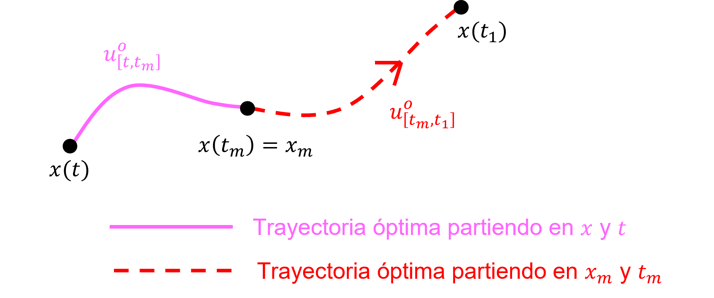

Dado un sistema dinámico:
\begin{align*} \dot {x}(t)=f\big ( x(t),u(t),t\big ) \end{align*}
Problema es encontrar \(u(t)\), para llevar el estado \(x(t)\) hasta \(x(t_1)\), para un tiempo finito \(t\in [t_0,t_1]\), tal que se cumpla la siguiente condición, donde \(J(u)\) es el funcional de desempeño:
\begin{align*} J(u) = \int _{t_0}^{t_1} \mathcal {L} \big ( x(t), u(t), t \big ) dt + m \big ( x(t_1) \big ) \end{align*}
El problema de control óptimo se define como:
\begin{align*} u^\star = \arg \min _{u_{[t_0,t_1]}} J(u) \end{align*}
Se define la función de valor V como el mínimo costo posible para la trayectoria del sistema dinámico para todos los controles posibles \(u_{[t_0,t_1]}\):
\begin{align*} V(x_0,t_0) = \min _{u_{[t_0,t_1]}} J(u) = \min _{u_{[t_0,t_1]}} \Big \{\int _{t_0}^{t_1} \mathcal {L} \big (x(t),u(t),t\big )dt+m\big (x(t_1)\big ) \Big \} \end{align*}
Para cada \(t\in [t_0,t_1)\) y \(x\in \mathbb {R}^n\), y para \(\Delta t\in [0,t_1-t)\), la función de valor \(V(x,t)\) satisface la relación:
\begin{align*} V(x,t) = \min _{u_{[t,t+\Delta t]}} \Big \{ \int _t^{t+\Delta t} \mathcal {L}\big (x(s),u(s),s\big )ds+V\big (x(t+\Delta t),t+\Delta t\big )\Big \} \end{align*}
Entonces, el principio de optimalidad (de Bellman) estable que para que una solución completa sea la mejor (óptima), cada parte de esa solución también tiene que ser la mejor posible.
Intuición:

Esta ecuación resuelve \(V(x,t)\) y se obtiene de la siguiente forma:
\begin{align*} \text {Ec. HJB: } \quad -V_t(x,t) = \min _{u \in \mathcal {U}} \left \{ \mathcal {L}(x,u,t) + \left ( \nabla _x V(x,t) \right )^T f(x,u,t) \right \} \end{align*}
donde \(V_t=\frac {\partial V}{\partial t}\), \(\nabla _x V=\frac {\partial V}{\partial x}\)
Notar que la ecuación HJB es una ec. diferencial parcial. Por lo tanto, para resolver necesitamos condiciones de borde:
\begin{align*} V\big (x(t_1),t_1\big )=m\big (x(t_1)\big ) \end{align*}
Definición: Hamiltoniano
\begin{align*} \mathcal {H}(x,p,u,t) = \mathcal {L}(x,u,t) + p^T(x,t) f(x,u,t) \end{align*}
donde \(\mathcal {H}\) es el Hamiltoneano; \(\mathcal {L}\) es el Lagrangiano; \(p = \nabla _x V\) es la penalización de Lagrange; y \(f\) es la dinámica del
sistema.
Entonces, la ex. HJB se reduce a:
\begin{align*} -V_t(x,t)=\min _{u \in \mathcal {U}} \mathcal {H}(x,p,u,t) \end{align*}
Con estas herramientas, formulamos el siguiente algoritmo para diseñar controladores óptimos:
Sea el sistema LTI:
\begin{align*} \dot {x} = f(x,u) = A x + B u \end{align*}
y el funcional de desempeño:
\begin{align*} J(u) =\int _{t_0}^{t_f} \left [ x^T Q x + u^T R u \right ] dt + x^T(t_f) Q_f x(t_f) \end{align*}
Requisitos: \(Q\), \(R\), \(M\) son matrices definidas positivas y simétricas.
Utilizando el algoritmo para resolver la ec. HJB:
\begin{align*} -V_t(x,t) &= \mathcal {H}(x,u^\star ,V_t,t)\\ \Longrightarrow -V_t &= x^T Q x + (u^\star )^T R u^\star + V_x^T \left (A x + B u^\star \right ) \end{align*}
\begin{align} \Longrightarrow -V_t &= x^T Q x - \frac {1}{4} V_x^T B R^{-1} B^T V_x + V_x^T A x \end{align}
Suponga que: \(V(x,t) = x^T P(t) x\), \(P(t) \in \mathbb {R}^{n \times n}\), \(P^T (t)=P(t)\), \(P(t) \succ 0\)
\begin{align*} V_t &= x^T \dot {P}(t) x\\ V_x &= 2 P(t) x \end{align*}
Sustituyendo en (12):
\begin{align*} -x^T \dot {P}x &= x^T Q x-\frac {1}{4} \left ( 2 P x \right )^T B R^{-1} B^T \left ( 2 P x \right ) + \left ( 2 P x \right )^T Ax\\ \Longrightarrow -x^T \dot {P} x &= x^T \left [Q + PA + A^T P - P^T B R^{-1} B^T P \right ]x\\ \Longrightarrow -\dot {P} &= Q + P A +A^T P -P^T BR^{-1}B^T P \quad \text {(Ecuación de Riccati)} \end{align*}
Para resolver la ecuación (diferencial) de Ricatti, es necesaria una condición inicial (o final). En estos casos, se ocupa el costo terminal para obtener \(P(t_f) = Q_f\), y con este valor hacer la integración numérica de la EDO hacia atrás (“backwards integration”), hasta obtener \(P(t)\).
Sea el cambio de variable \(\tau = t_f - t, \tau \in [0, t_f-t_0]\):
\begin{align} \frac {dP}{dt} = \frac {dP}{d\tau } \frac {d\tau }{dt} = -\frac {dP}{d\tau } \end{align}
Entonces:
\begin{align*} \dot {P}(\tau ) &= Q + P(\tau ) A +A^T P(\tau ) - P(\tau )^T B R^{-1} B^T P(\tau ), \quad \forall \tau \in [0,t_f - t_0] \\ P(0) &= Q_f \end{align*}
Resuelto \(P(t)\), se calcula la ganancia del controlador:
\begin{align*} V(x,t) &= x^T P(t)x \\ V_x(x,t) &= 2 P(t) x\\ \Longrightarrow u^\star &= \frac {1}{2} R^{-1} B^T V_x(x,t) = -\frac {1}{2} R^{-1} B^T \left ( 2 P(t) x \right )\\ u^\star &= - R^{-1} B^T P(t) x\\ u^\star &= -K(t) x \end{align*}
donde \(K(t) = R^{-1} B^T P(t) \Longrightarrow \) Control óptimo LQR de horizonte finito (gains variable en el tiempo)